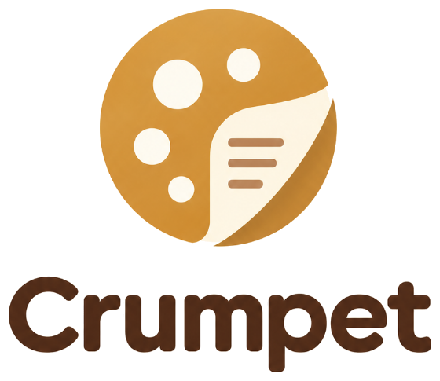

Privacy
Last updated 1 November 2026
Crumpet is a writing and note-taking app that runs in your browser, or as an app on a Mac or Windows computer. It has no server of its own and no accounts: Crumpet never sees your writing, and keeps nothing about you. There is nothing to sign up for, and no name or email is asked for. The only things that ever reach Crumpet are emails you choose to send (below).
Where your notes are kept
On your device, in your browser’s own storage. If you connect Google Drive, your notes are also saved as Markdown files in a folder in your own Google Drive. They go directly between your browser and Google; they never pass through anyone else.
What Crumpet can see in your Google Drive
Crumpet asks Google only for the drive.file permission. That lets it see and change the files and folders it created, or that you chose in Google’s folder picker, and nothing else in your Drive. Crumpet uses this access only to save and sync your notes.
Crumpet’s use of information received from Google APIs adheres to the Google API Services User Data Policy, including the Limited Use requirements.
Signing in to Google Drive
Sign-in happens on Google’s own pages, and only if you connect Google Drive. Crumpet never sees your password. Google gives Crumpet a short-lived access key, which stays in your browser.
Looking things up
When you use the Thesaurus or the Search tab in the right sidebar, the word or words you look up (and nothing else) are sent to the service that answers: Datamuse and the Free Dictionary API for the thesaurus, Wikipedia for search. “Search the whole web” opens DuckDuckGo in a new tab.
Other services your device talks to
Like any website or app, Crumpet’s files come from somewhere, and a few things load from other companies. Each sees your device’s internet address, never your writing; Crumpet sees none of it:
- The website is hosted by GitHub (GitHub Pages), which keeps the usual server logs. The Mac and Windows apps are downloaded from GitHub too, and once a day ask it whether a newer version is out.
- The fonts come from Google Fonts.
- Videos you embed in a note play from YouTube or Vimeo; dictation uses your browser’s own speech service.
Claude and other AI apps (optional)
If you add Crumpet to Claude or another AI app (Settings → Clipper & app), a small program on your computer lets that app read the notes in the folder Crumpet syncs to, and write new notes there. It runs only on your computer and sends nothing to Crumpet. What the AI app does with what it reads is up to that app and its own privacy policy. Remove it from the AI app to stop.
Problem reports and feedback (optional)
Help → Report a problem (or Send an idea or thanks) writes an email for you to send from your own email app, or from Gmail in your browser, to info.crumpetapp@gmail.com. Nothing is sent until you send that email yourself. It holds what you wrote and, unless you untick it, details about your device: which Crumpet and browser, the window’s size, the language, the look, how it syncs, how many notes and books you have, and the last few error messages. You can see all of it before sending. It never includes the text of your notes. Reports are kept in that mailbox to answer you and fix problems, and deleted when asked.
Stopping
Disconnect in Crumpet’s settings, or remove Crumpet at myaccount.google.com/permissions. Your files stay in your Drive.
Contact
Questions: info.crumpetapp@gmail.com, or github.com/petersinclairfleeton/crumpet-app/issues.